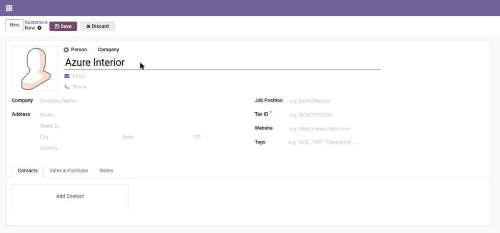
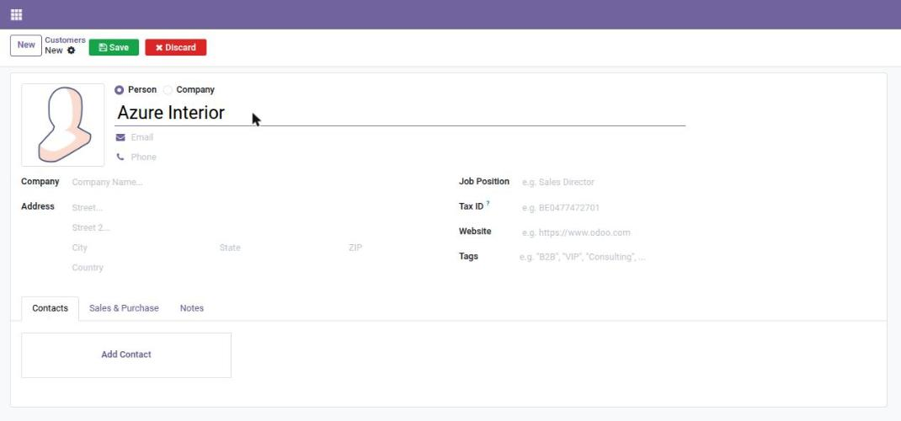
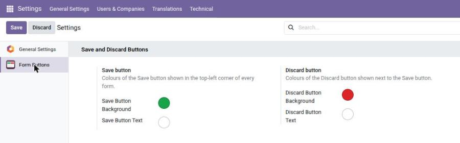

Odoo 19 shows only a small cloud icon and a cross in the top-left corner of a form. Many users do not notice them. This module shows two clear buttons, Save and Discard, on every form of every app, and lets the administrator choose the background and text colour of each button.



Questions or ideas? Open an issue at github.com/H-M-Nizum/form_action_buttons.